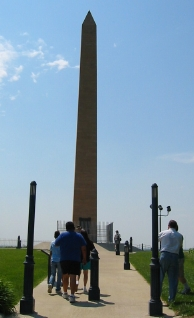

The Legend-News
What We Got Here in this edition of The Legend-News.
- Lewis & Clark
- C.W. McCall Tour 2002
- …and Other Events
- Song A’ Th’ Week: "Lewis And Clark".
Ed.'s Not Here. The entire staff of The Legend-News is taking a two-week vacation to parts East, so don't despair if your e-mail queries or orders go unanswered for a while. We'll try to check our mail if possible; but if not, the earliest that you'll here from us again will be August 8.
Lewis & Clark
You can't get there from here.
Time for another history lesson, folks. Pretend you're back in school, and memorize the dates.
Back about 200 years ago, in 1803, a couple of guys — Captain Meriwether Lewis and 2nd Lieutenant William Clark, officers of the U.S. Army — got an order from the President of these United States: explore "the interior of the continent of North America, or that part of it bordering on the Missourie & Columbia Rivers", according to Thomas Jefferson.
Long before the fabled Convoy, Lewis & Clark (whose names are rarely mentioned separately) traveled almost twice the width of the U.S. Their mission was to extend the influence of the still-new United States of America across the land to the Pacific Ocean. The Louisiana Purchase, a land parcel that stretched from the Mississippi River into the Northwest, was unsurveyed and its inhabitants and resources were unknown.
Lewis departed from Pittsburgh, Pennsylvania on August 31, 1803, travelling by keelboat down the Ohio River. Clark, who was living in Louisville, Kentucky, joining Lewis on October 15. They travelled together to a point near St. Louis, Missouri, gathering supplies and recruiting men for the expedition.
On May 13, 1804, they began their move westward. Their destination: the mouth of the Columbia River, on the Pacific Ocean. The journey was long: today, in 2002, we could follow the Interstate highways and complete the outbound trip in less than a week, but Lewis & Clark didn't reach the Pacific until December 1805. Yeah, two years to cross the country. But then they did a lot of sight-seeing, and had to deal with occasionally-unfriendly residents of the areas through which they crossed.
They didn't travel through the winter months, though. Travelling in good weather was difficult enough (remember, this was long before the Oregon Trail began), and travelling in winter was suicidal. They may have begun the main part of the journey in May, 1804, but they had been quartered at Camp River DuBois (across the Mississippi River from St. Louis; its actual location is disputed) since mid-December 1803. In the winter of '04-'05, they stopped at Fort Mandan, northwest of where Bismarck, North Dakota now lies. And at the mid-point of their trip, they had reached Fort Clatsop on the Columbia River, where they spent the winter of '05-'06.
And then, they turned around in March 1806 and headed back to St. Louis. The return trip was much quicker, and by September 1806 the expedition of Lewis & Clark had ended.
Oh, you're looking for details? Well, they did meet this Indian gal named Sacagawea, a Shoshone, who was the wife of their interpreter. She acted as a guide, and coincidentally met her own brother in Idaho. Clark had a slave, name of York, who was treated more like "one of the boys" than an indentured servant. And then there are the other 45 or so men who comprised the expedition, who didn't get the fame and fortune for being a part of the expedition. Heck, even Lewis & Clark only had a minor bout with celebrity: two years after their return they were almost unknown, as the exploits of more recent explorations were filling the newspapers. Only when their journals were republished around 1900 did Lewis & Clark get the attention that they deserved.
They didn't make their journey with the desire to claim the land of the Louisiana Purchase (which, by the way, became the Louisiana Territory in 1805, in the middle of the expedition) for the U.S.A.: they travelled because there was a need to know about the land and its inhabitants. Sure, the U.S. would continue its westward expansion, exploiting the natural resources and displacing the native inhabitants; but like Columbus, Lewis & Clark served to tell the world of the treasures of an unknown land. Blame 'em for the results, if you like; but without the expedition of Lewis & Clark, the U.S. wouldn't be the country that it is today.
C.W. McCall Tour 2002
Goin' to Sioux City, gonna have some fun
[These entries aren't in strictly chronological order. By they do have relevance to the top story in this issue.]
Friday, June 7. We're in the land of Lewis & Clark. Not just those guys that we mentioned above, but also of Fairweather Lewis and Willard Clark of Pottawattamie County, Iowa. They (the cops) once busted "two hippies in a Chevy's puffin' grass an' sippin' wine", and we found the location.

Yeah, pretty remote, isn't it?
Saturday, June 8. We went to Sioux City, Iowa, which was mentioned in "I Wish There Was More That I Could Give" from C.W. McCall & Co. We tried to find a park bench, to match a scene in the song, but we failed miserably. We couldn't even find a park, even one that was clearly on the map. And that was after we discovered that the quickest path to that park, according to Alan's GPS unit, was a decidedly non-public road through an industrial park. The nice lady at the guard shack informed us of an alternate route; fortunately, we didn't try to explain exactly why three cars with suspicious men were trying to take a shortcut through the property.
Failing to find the entrance to the park, Lee made a suggestion and we headed back down the road a bit and turned up a drive onto a bluff that overlooked Sioux City. And there at the top was an obelisk (you know, one of those stone towers that look like the Washington Monument).


The Sergeant Floyd Monument. The plaque on it says "This shaft marks the burial place of Sergeant Charles Floyd, a member of the Lewis and Clark Expedition. He died in his country's service and was buried near this spot, August 20, 1804. Graves of such men are pilgrim shrines; shrines to no class or creed confined. Erected A.D. 1900 by the Floyd Memorial Association, aided by the United States and the State of Iowa."
Floyd was the only member of the Lewis & Clark expedition to die during the journey. He probably died from appendicitis.
To be continued…
…and Other Events
An excuse to put your pedal to the metal
Nothing new to report here, but The World's Largest Truck Convoy in was held in Orlando, Florida, on July 20. 248 trucks participated in the Convoy.
Song A’ Th’ Week
Words without music. Call 'em poems.
Meriwether Lewis and William Clark explored the Louisiana Purchase; Fairweather Lewis and Willard Clark upheld the law in Pottawattamie County. But did you know that C.W.'s "Lewis And Clark" is based on a real team of Lewis and Clark? Those men were Jerry Lewis and Calvin Clark, and they really were officers of the Pottawattamie Country Highway Patrol.
Lewis And Clark
(C.W. McCall, Bill Fries, Chip Davis)
From the album
Black Bear Road
Now Arnold Jones an' MaryBeth Jensen's in a 'Vette down by the Deep Rock
Had John Denver on the 8-track, gettin' high
MaryBeth's wig was on the floor
An' Arnold's feet was out the door
When we shined our flashlight in Arnold's startled eyes
I says "What chew doin' boy?
Don't chew know that's against the law?
We just gonna hafta get this situation under control
Now my name is Fairweather Lewis an' this here's Willard Clark
We the Pottawattamie County Love Patrol."
Then two hippies in a Chevy's puffin' grass an' sippin' wine
'Bout fourteen mile south-east a' Council Bluffs
They's passin' 'round the peace-pipe
When we caught 'em with our flashlight
An' Willard's hairy hands applied the cuffs.
I says, "Boys you got some trouble
You committin' herb-i-cide.
We just gonna hafta get this situation under control
'Cause I'm Fairweather Lewis, an' this here's Willard Clark
We the Pottawattamie County Weed Patrol."
Then we spied ol' Marvin Kline a-headin' south on twenty-nine
Like a midnight auto ac-cessory store on wheels
His trunk was full a' hub caps
An' his back seat full a' tires
When we picked him up and made him spread his heels
I says, "Hands up-on the wall, boy
You allowed t' make one call
We just gonna hafta get this situation under control
Cause, see, I'm Fairweather Lewis, an' this here's Willard Clark
We the Pottawattamie County Rip-off Patrol."
Then Orval Hinkle left the Go-Go Club on his brand-new motor-sickle
Runnin' stop-lights, raisin' hell an' causin' accidents
His brain was doin' wheelies
An' his blood was three-two beer
When we nailed him in his driveway at his residence
I says, "Orval, you're in trouble boy
But if you'll blow this here balloon up
We gonna get your situation under control
Now I'm Captain Fairweather Lewis an' this here's Willard Clark
We the Pottawattamie County Juice Patrol."
Then we's passin' by the Dew Drop Inn when he heard this woman scream
So we pulled on in an' parked an' got the guns out
Well we bashed on through the lobby into unit seventeen
There's twenty-eight folks in there without no clothes on.
I says "Everbody up against the wall; show us yer identification.
We just gonna definitely get this situation under control
'Cause my name is Fairweather Lewis, an' this here's Willard Clark
We the Pottawattamie County Sin Patrol."
C'mon, Willard, let's go sneakin' 'round in the dark some more, never know what yer gonna find.
Next Issue
The next issue will be August 19. Yes, you'll be wondering where the yellow journalism went, but the simple reason is that the staff taking a two-week vacation and they won't be home for the 5th.
So go barbecue something outside, sweat a little, mow the grass, ride your bike and take a break. See you in 21 days.
The Legend-News is published fortnightly — unless the fortnight is the fifth Monday, in which case it's published fortnightly-and-a-half — by TechRen Enterprises, where the East peters out. Contents Copyright 2002 TechRen Enterprises, except for anything that we borrowed from someone else. Thanks to Bill Fries and Chip Davis for the words and music, and thanks to a Large Multinational Record Company That We Can't Name Because They Might Notice Us for not suing our pants off. "You gonna do somethin', or just stand there and bleed?"